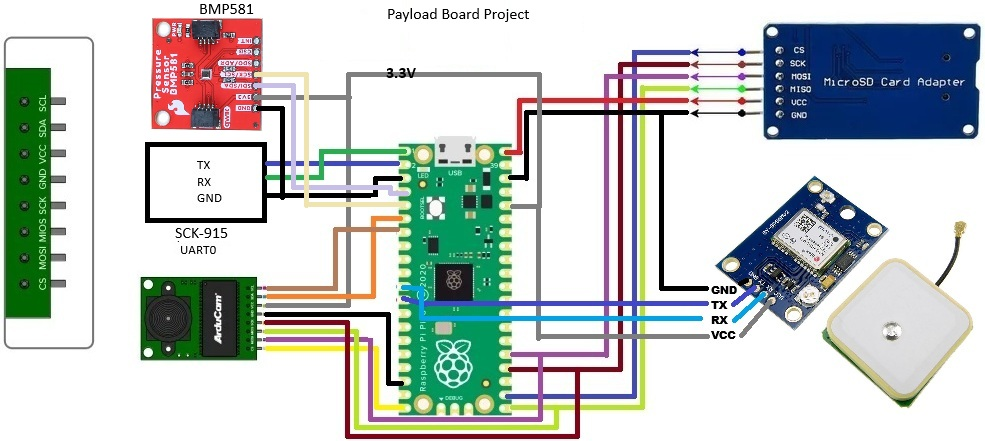

A proven end-to-end pipeline: command a Raspberry Pi Pico over RF, capture a JPEG image with an Arducam OV2640 camera, and transfer it back to your Windows PC — all wirelessly.
Start Building →The Pico acts as a remote payload processor. Board 0004 receives RF commands and forwards them to the Pico over UART. The Pico handles camera, storage, and file transfer.
Send PICO Snap from ground station. Pico captures JPEG and saves to SD. Returns filename and size confirmation.
Request SD card file listing over RF. Returns comma-separated filenames displayed in the Files tab.
Transfer image in 200-byte chunks over RF. Ground station reassembles and saves to Images\ folder. Auto-opens Explorer.
Remove files from SD card remotely. Confirmation dialog prevents accidental deletion.
In addition to the OpenLST Explorer Dev Kit (which provides board 0004), you need these additional components for the imaging pipeline.
| Component | Notes | Link |
|---|---|---|
| Raspberry Pi Pico | Original Pico (RP2040). Micro USB cable required. May need extension cable — board 0004 must be 2–4 feet from board 0001. | raspberrypi.com |
| Arducam OV2640 Mini 2MP | SPI camera module. Must be direct-wired to Pico — not through a breadboard. Breadboard connections are unreliable at SPI speeds. | Amazon → |
| SPI MicroSD Card Adapter | Important: Use an adapter with 5V power input and 3.3V logic (level-shifted). Connect VCC to Pico VBUS (5V), not 3.3V. | Amazon → |
| MicroSD Card | Format as FAT32 before use. 8GB or larger recommended. | Any retailer |
| USB to Serial FTDI Adapter | 3.3V TTL. Used to connect board 0001 to your Windows PC. Included with Explorer Dev Kit. | Amazon → |
| Jumper Wires | Male-to-female and male-to-male. Use direct wires for camera — not breadboard connections. | Any retailer |
All three devices share the Pico's SPI0 bus with separate chip select pins. Follow this diagram exactly — pin assignment matters.

| Board 0004 Pin | Pico Pin |
|---|---|
| P1_5 (UART0 TX) | GP1 (UART0 RX) |
| P1_4 (UART0 RX) | GP0 (UART0 TX) |
| GND | GND |
| Camera Pin | Pico Pin |
|---|---|
| VCC | 3.3V |
| GND | GND |
| MISO | GP16 |
| MOSI | GP19 |
| SCK | GP18 |
| CS | GP15 |
| SDA | GP4 |
| SCL | GP5 |
| SD Card Pin | Pico Pin |
|---|---|
| VCC | VBUS (5V) ⚠️ |
| GND | GND |
| MISO | GP16 (shared) |
| MOSI | GP19 (shared) |
| SCK | GP18 (shared) |
| CS | GP17 |
The SD card adapter VCC must connect to the Pico's VBUS pin (5V from USB), NOT the 3.3V pin. Using 3.3V will cause unreliable SD card operation. The Arducam uses 3.3V — do not connect it to VBUS.
The Arducam OV2640 must be connected with direct jumper wires — not through a breadboard. Breadboard connections introduce enough resistance and capacitance to make SPI communication unreliable at 400kHz, causing FIFO read failures.
Download MicroPython v1.27 for the Pico from micropython.org. Hold BOOTSEL while connecting USB, then copy the .uf2 file to the drive that appears. Install Thonny to manage files.
Follow the wiring diagram above. Direct-wire the camera (no breadboard). Connect SD card VCC to VBUS. Connect board 0004 UART0 (P1_5 → GP1, P1_4 → GP0). Insert formatted microSD card.
Board 0004 needs the custom firmware with PICO_MSG support. Clone github.com/eor123/openlst, build with SDCC, and flash OTA from the ground station Firmware tab. See the Developer Guide for full build instructions.
Power board 0001 (external 5V), power board 0004, power Pico via USB. In the ground station, set HWID to 0004. Wait 5–10 seconds for Pico boot and camera init. Send PICO Ping from Custom Commands — you should see ✓ ack → PICO:ACK.
Send PICO Snap from Custom Commands. You'll see ✓ ack → SNAP:OK:snap_001.jpg:4617. Go to the Files tab, click Refresh List, select snap_001.jpg, click Get File. Image saves to your Images\ folder and Explorer opens automatically.
Wait 5–10 seconds after Pico boot — camera initializes on first idle timeout. Verify UART wires (P1_5→GP1, P1_4→GP0). Confirm Pico is running main.py by checking Thonny console.
Camera is on breadboard — direct wire required. Or SPI was corrupted by SD mount — power cycle Pico. Check camera VCC is on 3.3V not VBUS.
SD card VCC must be on VBUS (5V pin), not 3.3V. Confirm card is formatted as FAT32. Try a different SD card — some cards are incompatible with SPI mode.
Boards too close together — maintain 2–4 feet separation. Check RF link quality with Get Telem (RSSI should be above −90 dBm). Retry logic will attempt each chunk 3 times.